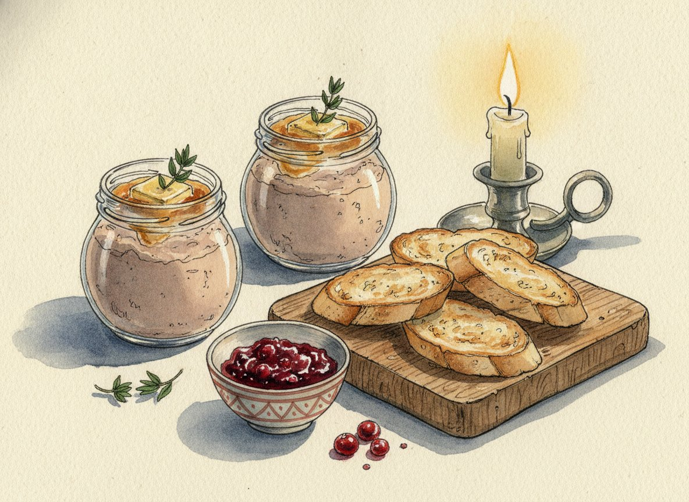
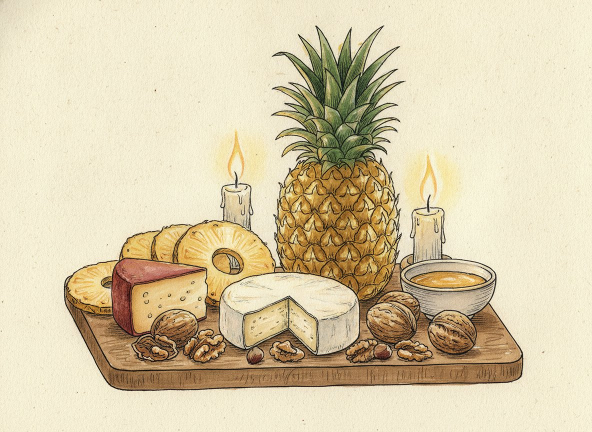
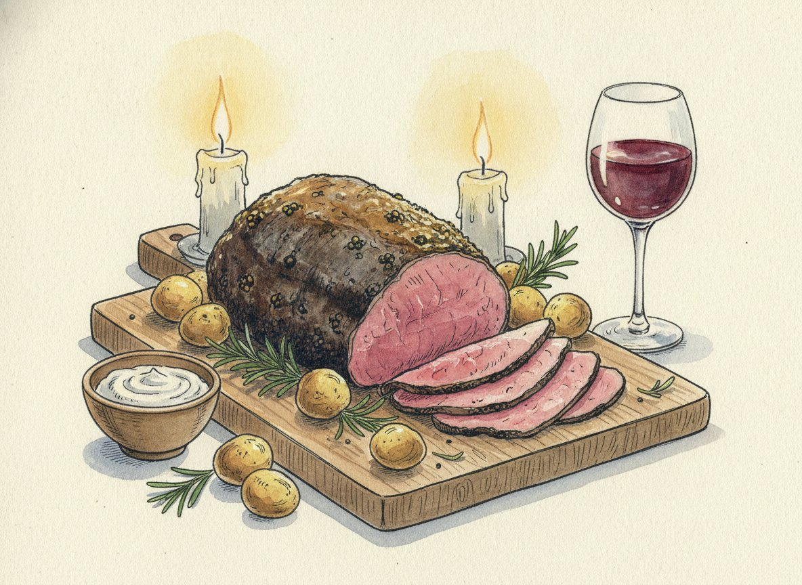
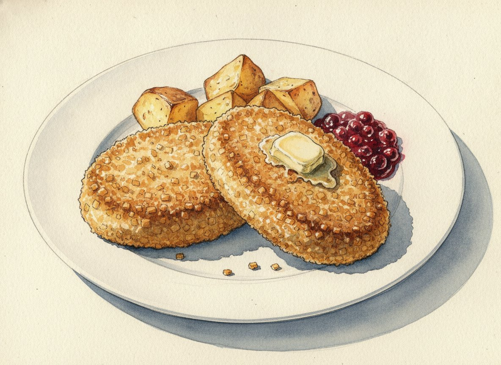
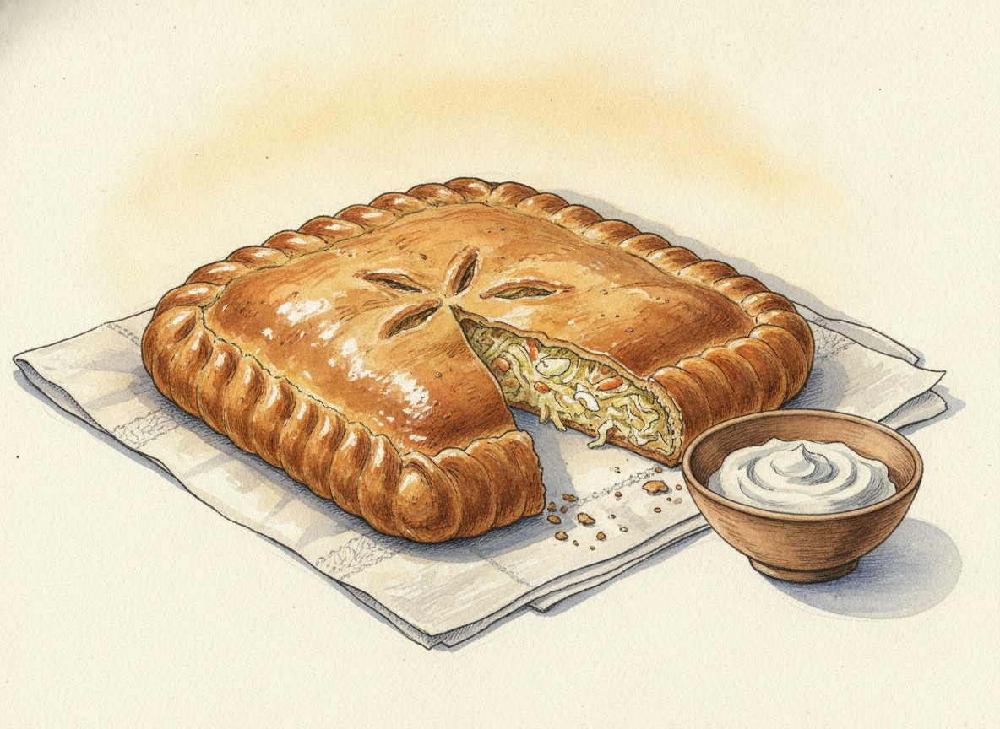
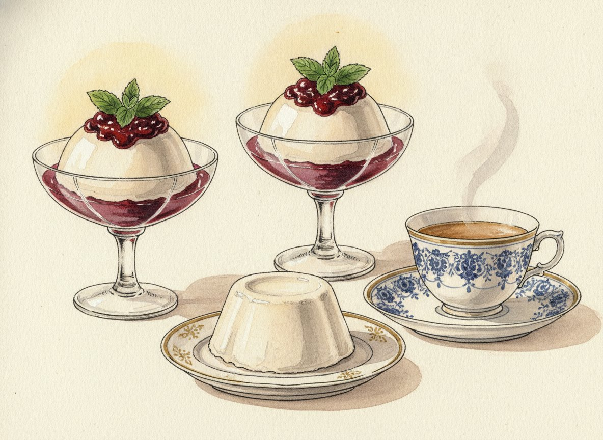

Все темы · Эпохи и книги
Пушкинская вечеринка
«Евгения Онегина» читали в школе почти все, но мало кто замечает, сколько в нём еды. Мы соберём два стола из одного романа за один вечер: гости начнут во французском ресторане Talon на Невском, а закончат у Лариных за чаем.

Меню по ходу вечера
У Talon
гости приходят «с мороза»
Паштет «Страсбургский пирог»
Нежный паштет из куриной печени вместо французского из гусиной.

Сыр и ананас
Прямо по первой главе романа.
Горячее
одно на выбор
Ростбиф
«Окровавленный», как у Онегина. С печёным картофелем и хреном.

Пожарские котлеты
Котлеты, которые Пушкин советовал другу. Нравятся детям.
У Лариных
именины Татьяны
Пирог с капустой и яйцом
Деревенский стол «привычек милой старины».

Бланманже с вареньем
К чаю, как в пятой главе.
Напитки
к блюдам и без алкоголя- Игристое, «вино кометы»к началу вечера, 18+
- Цимлянское и бордок горячему, 18+
- Брусничная водабез алкоголя
- Чайк бланманже
18+ Чрезмерное употребление алкоголя вредит вашему здоровью.
Когда устроить
25 января, Татьянин день. 6 июня, день рождения Пушкина. Или любой зимний вечер: роман зимний.
Когда готовить
Половина работы делается накануне: паштет, бланманже и брусничная вода. В день праздника пирог и горячее.
Чем занять гостей
- Шарады
- «Продолжи строку»
- «Правда или миф?»
- Святочные гадания
Откройте набор целиком
Онлайн-версия удобна на телефоне и на кухне: все рецепты, план по часам и список покупок. PDF можно распечатать.